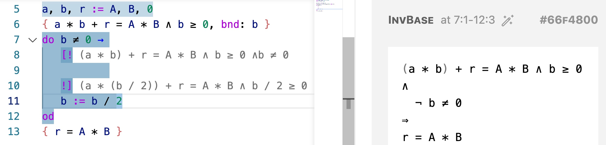

© 2021. All rights reserved.
 Site created with
Hakyll.
Site created with
Hakyll.
Modified theme
lanyon-hakyll
based on
Lanyon.
© 2021. All rights reserved.
 Site created with
Hakyll.
Site created with
Hakyll.
Modified theme
lanyon-hakyll
based on
Lanyon.
Guabao is a programming environment encouraging the methodology that a program and its correctness proof should be developed hand in hand, and that how a program should be proved could sometimes give hints how the program can be written.
Guabao uses a variation of Edsger W. Dijkstra’s Guarded Command Language — see the language overview. However, Guabao is also an environment built into an editor. Shown below is a screen shot:

As the program is being written in the left pane, Guabao instantly parses the program, infers, and displays in the right pane proof obligations yet to be proved to show that the program meets the postcondition.
Code yet-to-be-written can be left as holes (specifications with pre and post consditions) to be filled in later, for example the hole between line 8 – 10. Attempts to prove the proof obligations may give clues how the holes can be filled or, in case of failure, indicate that we need a stronger precondition or loop invariant.
See the tutorial for more explanations.
The Name. GUA in Guabao comes from GUArded command language. Guabao (刈包) is a street food popular in places including Taiwan, where Guabao the software was designed.
It might also help to clarify what Guabao is not:
The frontend of Guabao is an extension of Visual Code Studio. You can install it by searching for the extension “Guabao” in the editor, or through the Extensions Marketplace. A simple one-click installation downloads the frontend as well as pre-compiled backend (implemented in Haskell).
Z3 has to be installed separately and locatable from $PATH. You do not need Z3 to run Guabao if you do not use the SMT-solving feature.
More information can be found in the tutorial, the Language Overview, and the Examples page.
Shin-Cheng Mu, Ting-Yan Lai, Thing-Han Lim, Chien-Yuan Su (Institute of Information Science, Academia Sinica, Taiwan.), and Hsien-En Tzeng (National Taiwan University).
The backend of Guabao is implemented using Haskell, while the frontend is implemented using Reason and compiled to Javascript to run as a VS Code extension. Source code of Guabao is stored on GitHub (frontend: https://github.com/scmlab/gcl-vscode, backend: https://github.com/scmlab/gcl).
Guabao is still under development — everything may change or break tomorrow! We welcome bug reports, feature requests, and other suggestions. Feel free to submit them as issues through the GitHub repositories above, or contact the authors.
In his article “On the cruelty of really teaching computing science” (EWD1036), Dijkstra wrote that he would design a programming language for teaching (which we believe would be GCL) and ``see to it that [it] has not been implemented on campus so that students are protected from the temptation to test their programs.’’↩︎